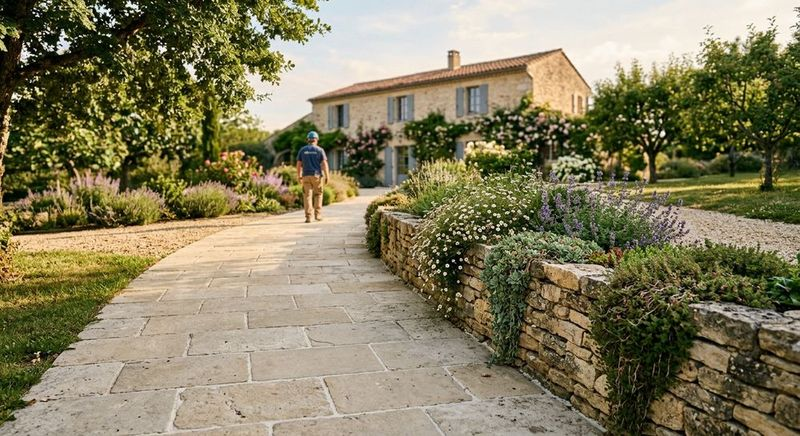
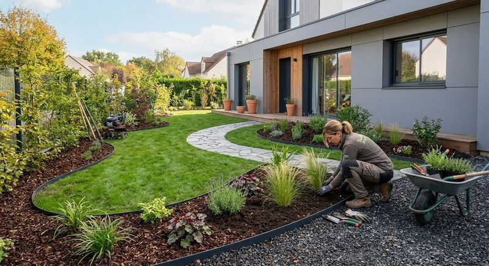
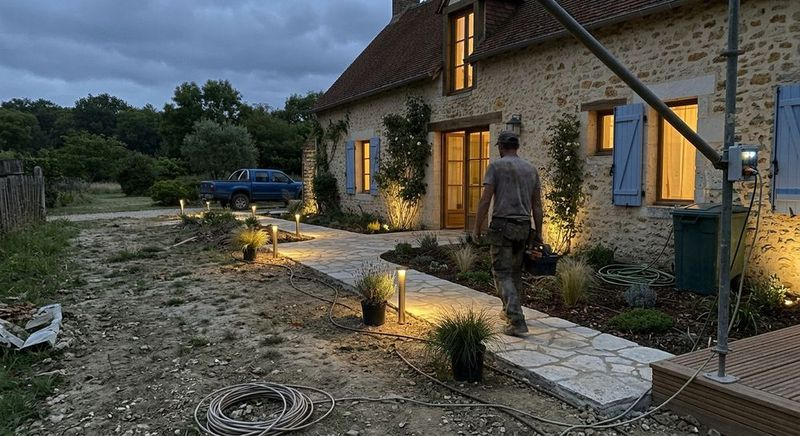
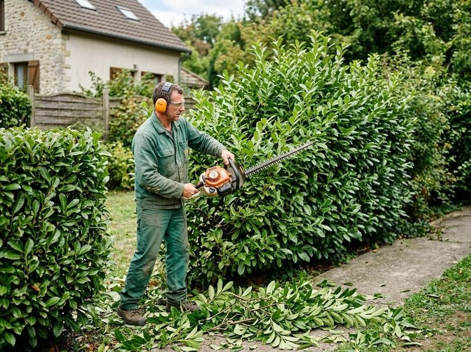

Terrasses et clôtures
Pose de terrasses en bois et de clôtures pour délimiter et prolonger votre maison.
Terrasses, clôtures, pelouse, débroussaillage, création et entretien : les paysagistes d’Au Cœur de l’Arbre transforment votre extérieur en véritable havre de paix.



Pose de terrasses en bois et de clôtures pour délimiter et prolonger votre maison.
Tonte régulière ou ponctuelle pour une pelouse nette toute la saison.
Reprendre un terrain envahi et rendre l’espace à nouveau praticable.
Création et entretien : plantations, massifs et suivi dans la durée.
Une terrasse bien posée prolonge le salon dehors. L’équipe vous conseille sur l’implantation et suit le chantier.

Pelouse, plantations, ensemble paysager : la même équipe crée l’espace vert puis l’entretient, pour un résultat qui dure.



Un appel suffit pour décrire votre projet.